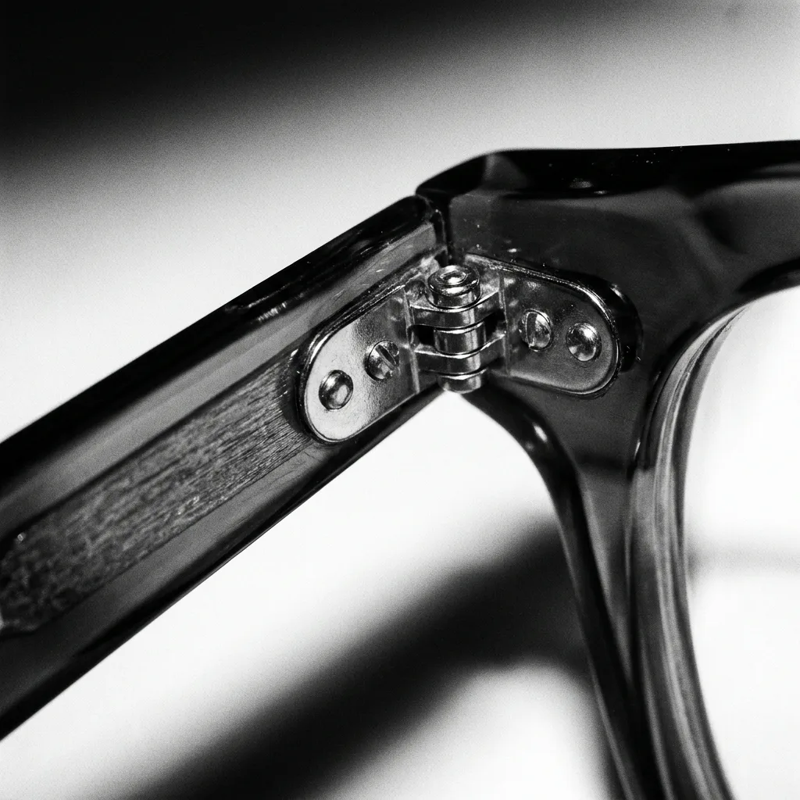

Collection
鏡框系列每一副,都是一件可佩戴的作品
我們相信少即是多。澄鏡只保留真正經得起時間的款式,以黑白為骨,讓你專注於最重要的事——看見。

材質與工藝
看不見的細節,
看不見的細節,
決定戴起來的感覺。
鉸鏈的緊度、鼻墊的角度、板材邊緣的倒角弧度——這些肉眼難察的細節,正是手工與量產的分界。澄鏡的每副鏡框都經過職人逐一手調,確保久戴不壓、開合順手。
所有光學鏡框皆可加購德國蔡司鏡片,並享三年保固與終身免費清洗、調整服務。